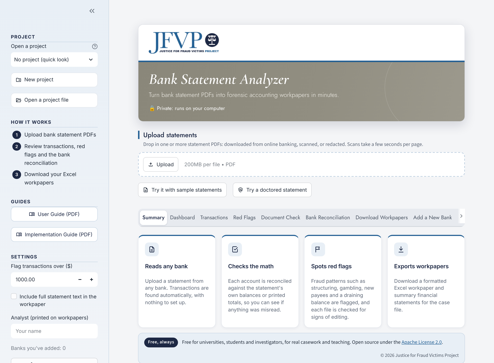
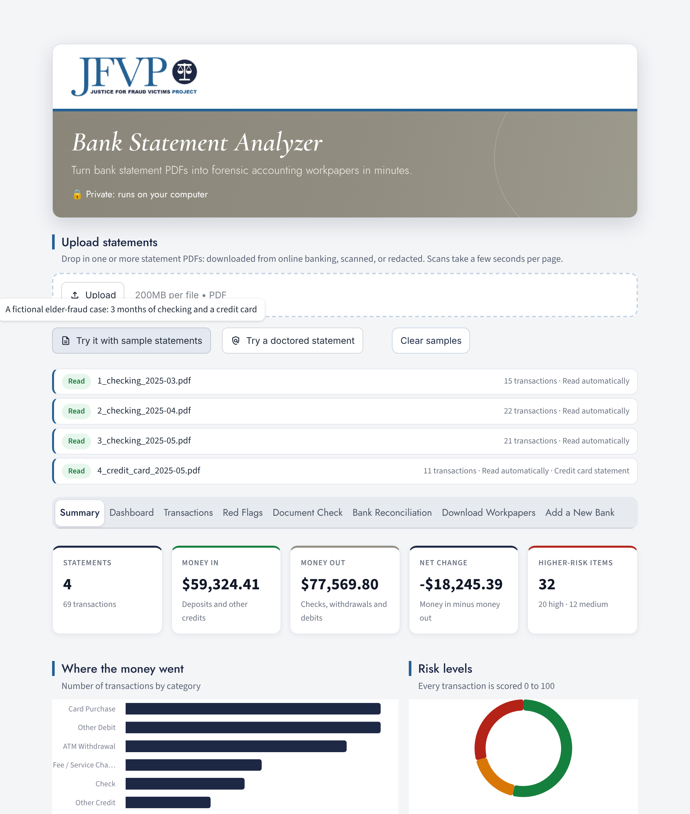
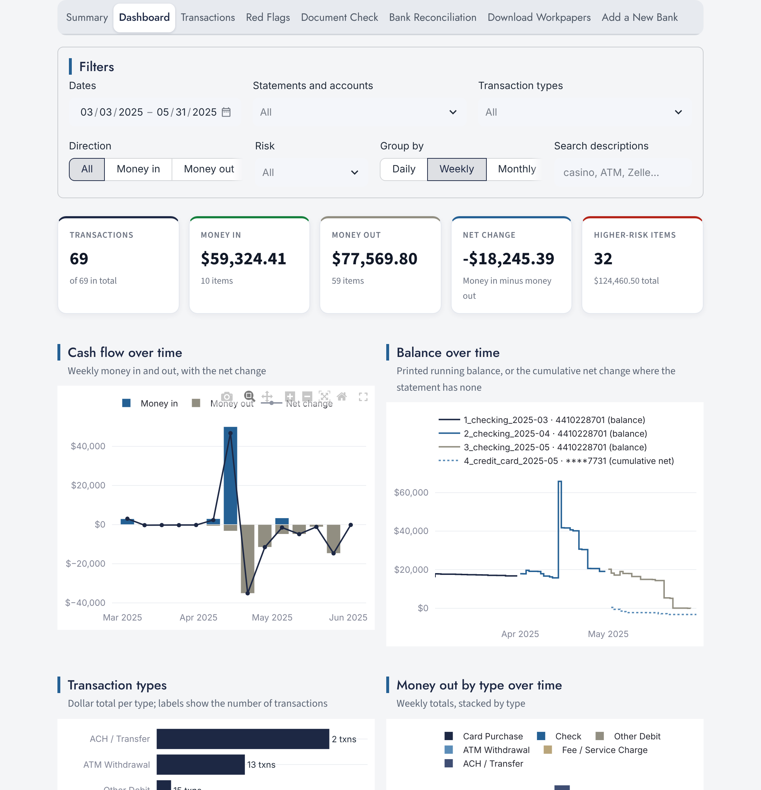
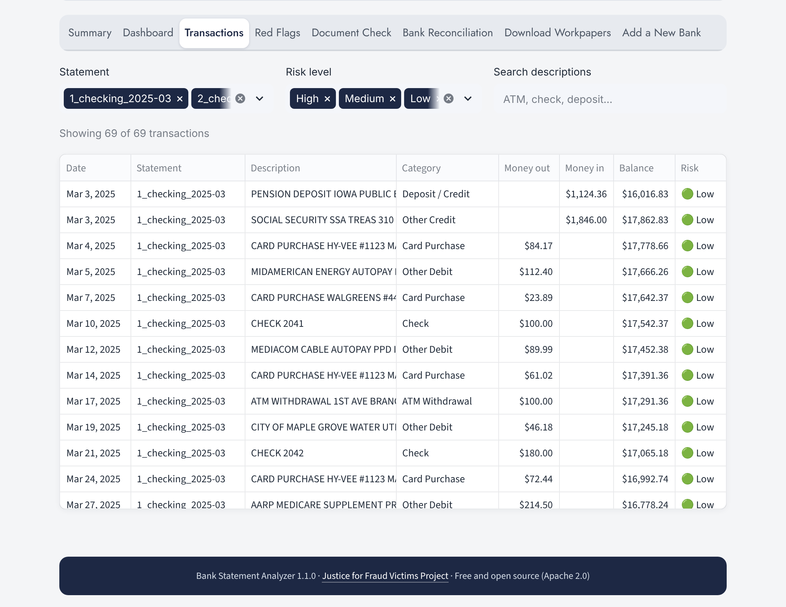
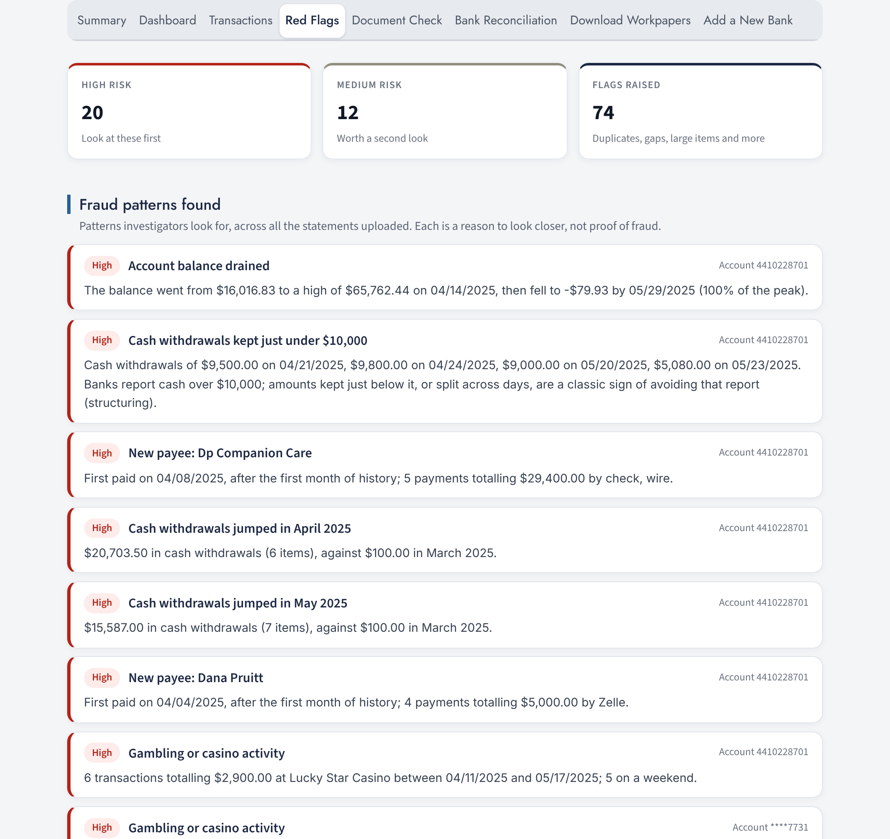
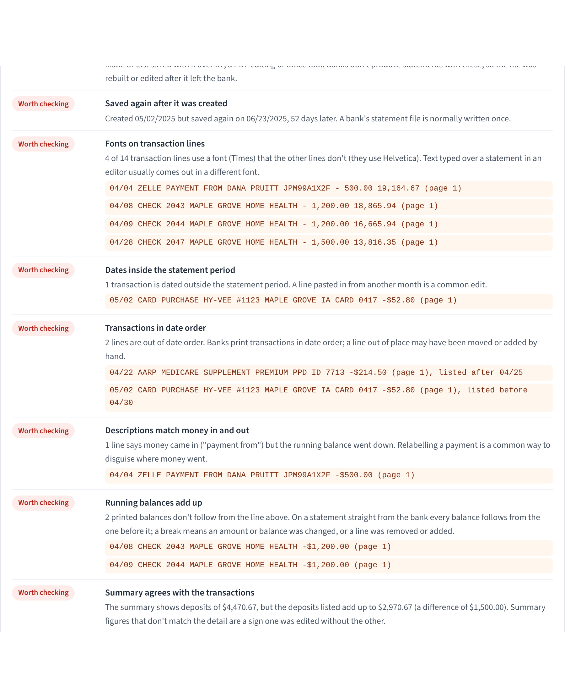
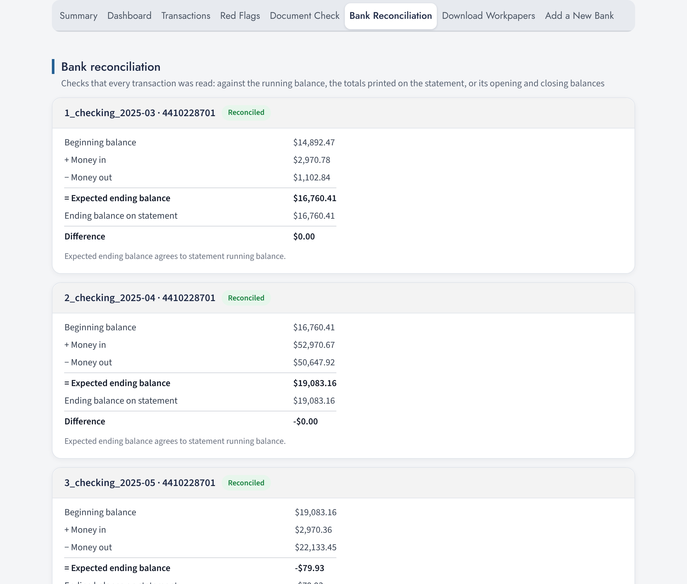
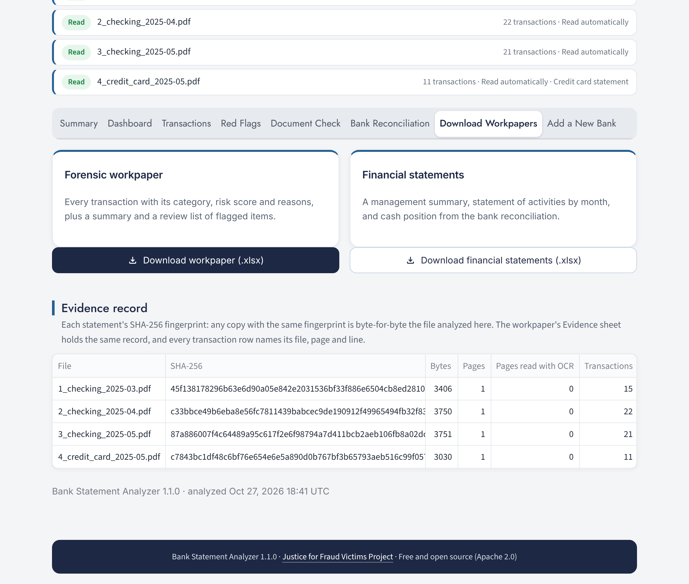
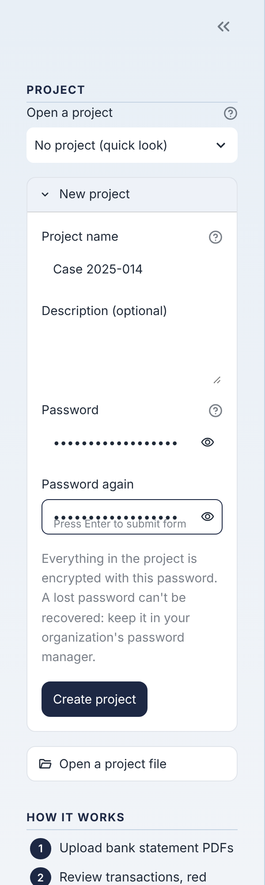
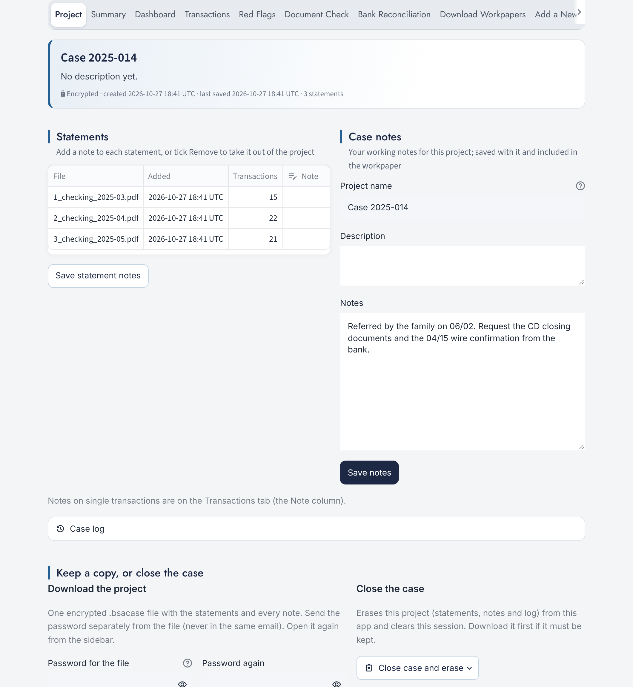

User Guide
Bank Statement Analyzer
Turn bank statement PDFs into forensic accounting workpapers in minutes.
Justice for Fraud Victims Projectjusticeforfraudvictimsproject.org
User Guide
Turn bank statement PDFs into forensic accounting workpapers in minutes.
Upload bank or credit card statements as PDFs. In a few seconds the analyzer reads every transaction, checks its own work against the statement, looks for fraud patterns and signs of editing, and produces an Excel workpaper you can put in the case file.
No setup or templates. Typed PDFs from online banking, scanned paper statements, redacted copies and credit card statements.
Every account is reconciled against the statement's own balances or printed totals, so you can see whether anything was misread.
Fraud patterns such as cash kept under $10,000, gambling, gift cards, new payees and a draining balance, plus signs a statement was edited.
A formatted Excel workpaper with an evidence record, summary financial statements, and interactive dashboard exports.
When you run the analyzer on your own computer, or from your university's copy, statements are read on your computer and are not uploaded anywhere. Case projects are encrypted with a password you choose.
Red flags and document checks show you where to look. Always confirm a finding against the statement itself before it goes into a report.
There are three ways to open the analyzer. They look and work the same.
| Way | How | Use it for |
|---|---|---|
| Your university's copy | Open the web address your instructor or IT department gives you. Nothing to install. | Classes, and real cases if your university has approved it |
| On your own computer | A one-time install (below). Also reads scanned statements. | Real cases and independent work |
| Public demo | The online demo linked from the project's website. | The fictional demo case only, never real statements |
Prefer VS Code? Open the unzipped folder with File → Open Folder, then choose Terminal → Run Task → Start the app.

If the analyzer shows "Demonstration copy: don't upload real case statements here," you are on a shared online copy where uploads leave your computer. Use it only with the fictional demo case.
The fastest way to learn the analyzer is the built-in demo case: a fictional elder-fraud investigation at a made-up bank.
To analyze your own statements, drag the PDFs onto the upload box, or click Upload. You can add several statements at once, including several months and several accounts.

Interactive charts: cash flow over time, balances, transaction types, money out by type, red flags, a risk timeline, top payees and day-of-week patterns. Use the Filters panel to narrow by date, account, transaction type, direction, risk or a search word. Every chart and total updates, and the exports at the bottom (Excel, CSV or an interactive HTML report) contain exactly what you filtered.

Every transaction in date order, with its category, money in, money out, running balance and risk level. Filter by statement or risk, or search the descriptions (for example casino or Zelle). When a project is open, the Note column lets you write a note on any transaction; it's saved with the project and printed in the workpaper.

At the top, Fraud patterns found lists patterns investigators look for, found across all the statements uploaded together:
Cash kept just under $10,000 (structuring), sudden jumps in cash withdrawals, card cash advances.
Gambling and casino activity, gift card purchases, duplicate payments, round-dollar transfers.
New payees receiving large sums, money in and straight back out, a draining balance, overdrafts.
Below that, the highest-risk transactions are listed with a score from 0 to 100 and the reasons for it, followed by every individual flag.

Each file is checked for the traces an edited statement usually leaves: a PDF editing tool, a file re-saved long after it was created, a few lines in a different font, dates outside the statement period or out of order, a "payment from" that actually took money out, balances that don't add up, summary totals that don't match, and figures formatted differently from the rest.
It also looks for the traces of a statement written from scratch by an AI tool: a PDF made by a programming library, leftover chatbot text (markdown symbols, placeholders like [Bank Name]), dates that don't exist such as 06/31, a routing number that fails its check digit, page numbers that don't match the file, and an account number that changes. Two or more of those and the file is reported as "may be AI-generated or fabricated".

A warning is a reason to get the statement directly from the bank. A clean result does not prove a statement is genuine. Scanned copies allow fewer checks, and the analyzer says so.
The analyzer checks its own reading. For each account it adds the money in and out to the beginning balance and compares the result with the statement's ending balance (or, when balances are redacted, with the totals printed on the statement).

Two Excel files for the case file:
The Evidence record lists each statement's SHA-256 fingerprint: a code unique to that exact file. Anyone can later confirm that a copy of a statement is byte-for-byte the file you analyzed.

A project keeps one case's statements, notes and history together, encrypted with a password you choose.

Nobody can recover a lost password, including the analyzer's developers. Store it in your organization's password manager.

| Statement | What the analyzer does |
|---|---|
| Scanned (pictures of pages) | Reads them with OCR (text recognition) on your computer. A few seconds per page. Works in the computer version and on university servers that offer it; the in-browser version shows a message instead. |
| Redacted | Blacked-out text shows as [redacted]. If an amount is blacked out but the balance isn't, the amount is worked out from the change in balance. When balances are redacted, the reconciliation uses the statement's printed totals. |
| Leaky redactions | If black boxes were drawn over text that is still in the PDF, the analyzer hides that text and warns you not to share the file as redacted. |
| Credit cards | Recognized automatically. Charges, fees and interest are money out; payments and refunds are money in. The reconciliation checks previous balance + charges − payments = new balance. |
| Several months in one PDF | Split into separate statements by statement period. |
The analyzer protects statements on screen and in projects. These habits protect them everywhere else.
Full-disk encryption on, automatic screen lock, updates installed, your own login. Never a public or shared computer. Use a browser profile without extensions for case work.
Only on your computer or your organization's approved copy. Never upload real statements to a copy showing the red "Demonstration copy" banner.
Workpapers and exports are not encrypted: keep them only in storage your organization approves. No personal cloud accounts, USB drives or email.
Use case numbers for projects and file names, not victims' names.
Share a project as a .bsacase file and send its password separately, by a different channel.
Download the project if it must be kept, then use Close case and erase. Delete working copies of exports on schedule.
A lost laptop, a file sent to the wrong person or an exposed password: tell your supervisor and your IT security office immediately, and note which statements and names were involved.
Students work on real cases only under supervision, after signing a confidentiality agreement, and with written authorization from the victim or appropriate legal authority on file.
The demo case is entirely fictional: a made-up bank, customer and caregiver, with every page marked as a sample. It is safe to use anywhere.
The story: Evelyn Hartwell, a retired widow, hires a caregiver in April. Over two months her account goes from about $16,000, plus a $50,000 certificate of deposit, to overdrawn. The caregiver shows the family a doctored copy of April that looks fine, and later her attorney sends an AI-generated statement as "proof" the money was repaid.
The full case adds the caregiver's business account at Quillbrook Credit Union and her personal account at Oxbow Prairie National Bank, so students can trace the money, plus nine case documents (an engagement letter, interview notes, the caregiver agreement, bank notices, check images and more). Download it all with Hartwell case pack (.zip) under Student materials, together with the Quick Analysis Guide and the workpaper template.
| Exercise | What students should find |
|---|---|
| Load the sample statements and compare March with April and May on the Dashboard | A normal March, a $50,000 deposit in April, then the balance draining to below zero by the end of May |
| Review Fraud patterns found on the Red Flags tab | New payees (the caregiver's company and the caregiver), cash kept under $10,000, casino activity, gift cards, a duplicate payment, overdrafts |
| Search the Transactions tab for "Lucky Star" and "Pruitt" | The casino withdrawals, and the Zelle payments to the caregiver |
| Click Try a doctored statement and open the Document Check tab | Nine signs the family copy was edited, and its failed reconciliation |
| Click Try an AI-generated statement and open the Document Check tab | Four signs the "proof of repayment" was written by an AI tool; and Evelyn's real May statement shows none of the repayments it claims |
| Click Try the full case and open the Red Flags tab | Cash deposited just under $10,000 in the caregiver's account days after each withdrawal, and the $24,000 wire passing straight through her company's account |
| Download the workpaper and open the Evidence sheet | Each statement's fingerprint, and the source page and line of every transaction |
The full answer key is in demo/ANSWER_KEY.md. To show OCR, drag demo/6_checking_2025-05_scanned_redacted.pdf into the computer version.
Something didn't add up. Compare the transactions with the PDF: look for a missing line, a misread amount or a line read in the wrong direction. The Document Check tab may also show why. If the reader made the mistake, let your instructor or the project know so it can be fixed.
The PDF may be a scanned image (use the computer version), password-protected, or not a statement. Try opening it in a PDF viewer first.
Reading scans needs the computer version (or a university server that offers it). The in-browser version says so next to the file.
It can't be recovered. If you downloaded a .bsacase copy with a different password, open that instead.
On a narrow window it starts closed. Click the » arrow at the top left of the page.
It reads statements from any bank without setup, and the Bank Reconciliation tab shows whether each one was read correctly. 57 major banks and card issuers are also labelled by name.
No. It is open source under the Apache License 2.0, © 2026 Justice for Fraud Victims Project.
This guide and the Implementation Guide can be downloaded any time from the Guides section of the analyzer's sidebar. Your instructor or your organization's IT team can help with your university's copy. The project's README, security guide and deployment guide are on its GitHub page.